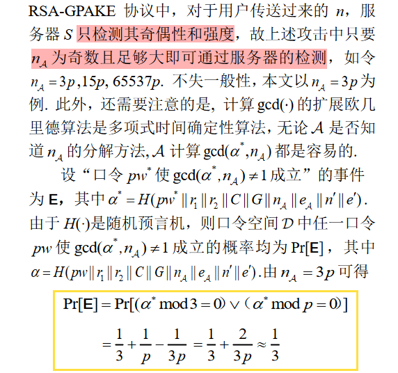

2011 年 Wei 等学者首次提出了一个基于 RSA 的可证明安全的网关口令认证密钥交换协议，并声称在随机预言模型下基于大整数素因子分解的困难性证明了协议的安全性。利用该协议中服务器端提供的预言机服务，提出一 种分离攻击，攻击者只需发起几十次假冒会话便可恢复出用户的口令。攻击结果表明，该协议无法实现所声称的口令保护这一基本安全目标，突出显示了分离攻击是针对基于 RSA 的口令认证密钥交换协议的一种严重安全威胁。进一步指出了协议形式化安全证明中的失误，给出一个改进方案。分析结果表明，改进方案在提高安全性的同时保持了较高效率，更适于移动通信环境。
Introduction
Partition Attack
PAKE 协议易遭字典攻击。依据攻击者对所猜测口令的验证方式，字典攻击主要分为离线字典攻击、在线字典攻击。
基于 RSA 的 PAKE 协议易遭受一类特殊的字典攻击——分割攻击(Partition Attack)。这种攻击将离线字典攻击和在线字典攻击结合起来
- 通过仿冒合法用户参与协议运行来收集口令相关信息
- 离线地从口令字典中过滤掉非潜在口令
重复步骤 1、2 直到剩下最后一个潜在口令，这个口令便是受害者所使用的口令，攻击成功。需要指出的是，攻击者通过步骤 1 收集的信息，可在步骤 2 中一次过滤掉两个以上口令，这是分割攻击与在线字典攻击的本质区别。
针对基于 RSA 的 PAKE 协议最典型两种分割攻击是 e 次剩余攻击 (e-Residue Attack) 和分离攻击 (Separation Attack)
Flaws in RSA-GPAKE
2011 年，Wei 等学者1指出现有基于网关的口令认证密钥协商 (Gateway-oriented PAKE, GPAKE) 协议都存在这样或那样的安全缺陷，首次提出了基于 RSA 的安全高效的 GPAKE 协议 (简称 RSA-GPAKE)， 并宣称在随机预言机模型 (Random Oracle Model, ROM)2下证明了协议的安全性。
但本文分析发现，RSA-GPAKE 协议对分离攻击是脆弱的，主动攻击者可在非常有限的交互次数内恢复出合法用户的口令。因此，RSA-GPAKE 协议存在严重安全缺陷，无法实现所宣称的安全性，在对该缺陷进行修正前不适于实际应用。
一个被形式化证明 “安全”了的协议为什么结果是不安全的？为解释这一矛盾现象，本文进一步分析了原协议形式化安全证明中的失误之处。为克服 RSA-GPAKE 协议中的上述严重安全缺陷，本文借鉴文献3中 PEKEP 协议防御”有用信息泄露“的思想，提出一个改进方案，并在 ROM 模型下给出了相应的严格归约证明 (Rigorous Reduction Proof)。分析结果表明，改进方案在提高安全性的同时，保持了较高的效率，更适用实际移动应用环境。
GPAKE协议的安全模型
通信模型
网关口令认证密钥交换 (GPAKE) 协议是一个由用户、网关和服务器参与的三方协议，协议的目 标是用户和网关在服务器的帮助下建立一个认证的会话密钥。
用户和网关之间的通信信道是不安全的公开信道，由敌手完全控制，可以窃听、阻断、删除和窜改流经公开网络中的任何消息，也可以插入伪造的消息；网关和服务器之间的通信则存在安全通道。
假设用户和服务器间事先共享一个低信息熵的口令，并且网关不知道口令的信息。GPAKE 协议的主要安全目标是通过服务器的参与，在用户和网关建立一个安全的会话密钥，并且实现用户口令对网关的私密性、会话密钥对服务器的私密性。
攻击者能力
- Execute($C^i$, $G^j$)：模拟攻击者的被动攻击(窃听)的能力
- Send($U^i$, m)：模拟攻击者的主动攻击
- Test($U^i$)：用来定义会话密钥的语义安全性，只对 “新鲜”的会话有效。如果实例$U^i$的会话密钥尚没有定义，返回⊥。 否则，随机选择一个比特 b，如果 b=1，向攻击者返回会话密钥 sk；如果 b=0，向攻击者返回一个等长的随机串。
- Test($C^i$, $G^j$)：刻画会话密钥对于服务器的私密性。如果用户实例$C^i$和网关实例$G^j$之间还没有建立共享的会话密钥，返回⊥。 否则，随机选择一个比特 b，如果 b=1，向攻击者返回会话密钥 sk；如果 b=0，向攻击者返回一个等长的随机串。
RSA-GPAKE 协议会话密钥的语义安全性通过 Real-Or-Random (ROR) 攻击游戏4 而非传统的 Find-Then-Guess (FTG)来模型化。在 ROR 攻击游戏中, 敌手可以进行多次 Test 查询，ROR 模型下攻击者的攻击能力要比 FTG 模型下强，关于二者的更详细比较可参见文献5。
安全目标
Abdalla 等人4的 GPAKE 协议安全模型中有四个安全目标，前两项是所有 PAKE 协议所应实现的基本目标2 , 后两项是 GPAKE 协议所独有的目标。
语义安全性：一个外部攻击者不能够多项式时间内将真实的会话密钥和与之等长的随机串区分开来
认证性：攻击者不能仿冒协议中的真实实体
密钥私密性：用户和网关之间建立的会话密钥对于诚实而好奇的服务器是不可区分的(专门针对服务器)
口令保护： 恶意网关通过协议运行不能得到用户口令的任何信息(专门针对网关)
RSA-GPAKE 协议的安全性分析
RSA-GPAKE
分离攻击
分离攻击针对的是 RSA-GPAKE 协议的“口令保护”这一基本安全目标，该攻击只需要攻击者 (外部攻击者或内部恶意网关) 有如下两种能力
- 可以窃听、阻断、删除和窜改流经公开网络中的任何消息，也可以插入伪造的消息
- 可以多项式时间内穷举搜索口令空间
上述两个攻击者能力假设是分析 PAKE 协议安全性的基本假设，也是所有 PAKE 协议面临的共同难题
在上述攻击的步骤 4)中，攻击者收到来自网关G的响应消息意味着$gcd(α{^}, n_{A} = 1)$，因此攻击者可以在步骤 7) 中通过检验$gcd(α{^}, n_{A} = 1)$是否成立来验证所猜测的口令的正确性。

防御方法
禁止 n 含小因子
限制攻击者发起假冒会话的次数
- 通过限制假冒会话总次数的方式
- 通过限制连续假冒会话次数的方式
协议形式化安全证明中的失误
RSA-GPAKE在证明其“口令保护”这一目标时，并没有采用严格的推理将攻击者对口令的猜测攻击归约到求解数学难题上 (如 RSA-GPAKE 所基于的 RSA 困难性假设)，而是在关键点下了轻率的结论——“恶意网关想要成功进行不可检测在线字典攻击，必须返回一个有效的认证值$μ$。如果恶意网关不知道 a，那么成功的概率至多为 $2^k$.”
RSA-GPAKE在阐述其“口令保护”这一安全目标的证明思想时，宣称可以直接利用 PEKEP 协议3的证明得到——“由 PEKEP 协议的证明可知，恶意网关每次和服务器进行交互至多排除掉一个口令.”
我们进一步分析了 PEKEP 协议3的安全性证明，发现 PEKEP 协议的“口令保护”这一 安全目标的相关证明并不直接适用于 RSA-GPAKE 协议。这表明 RSA-GPAKE 协议的“口令保护”这一安全目标的证明思想存在失误，而这一失误正是导致文献6形式化证明失效的根本原因。
警告：对协议进行形式化证明只是手段而不是结果，对潜在攻击的忽视和非紧致的归约常导致证明结果的失效，又由于证明过程的复杂性和证明方法的技巧性，这种失效的结果往往具有很强的隐蔽性和欺骗性，只有通过具体的攻击才能使协议的脆弱性得以显现。
虽然形式化方法已被很多密码学者认为是确保密码协议安全性的核心(甚至唯一)手段，但启发式分析(即传统的攻击分析)在建立和保持对密码协议的信任方面仍然具有不可替代的作用。
改进方案 RSA-GPAKE+
Advantages & disadvantages
优点
- 指出 RSA-GPAKE 协议容易受到分离攻击，无法实现所声称的口令保护这一基本安全目标。
- 进一步分析了 RSA-GPAKE 协议形式化安全证明中的疏漏之处，指出协议失误的根本原因，提出 一个改进方案，在未增加计算量和通信量的情况下修正了原协议的缺陷，并基于 ROM 模型给出了严格的归约证明
- 给协议设计者的启示：对协议进行形式化证明只是手段而不是结果，对潜在攻击的忽视和非紧致的归约常导致证明结果的失效
缺点/不足
在显示协议的完备性方面没有建树，如何确保此类协议完备性将是下一步重点工作
GPAKE 协议适用于移动通信环境，而移动环境中用户的隐私是重要的关注对象，因此设计具有匿名性的安全高效的基于 RSA 体制的 GPAKE 协议，也是值得进一步研究的方向
协议假设字典空间服从均匀分布（现实场景下口令基于Zipf分布）、安全性基于 RSA 困难性假设（RSA至少要4096bit才能保障安全），低估攻击者的攻击能力？
参考文献
1:魏福山, 马传贵, 程庆丰. 基于RSA的网关口令认证密钥交换协议[J]. 计算机学报, 2011, 34(1): 38–46.
2:Bellare M, Pointcheval D, Rogaway P: Authenticated key exchange secure against dictionary attacks[A]. Proceedings of Eurocrypt 2000[C]. Berlin : SpringerVerlag,LNCS, Vol. 1807, 2000:139–155.
3:Zhang Mu-Xiang. New approaches to password authenticated key exchange based on RSA[A]. Proceedings of Asiacrypt 2004[C]. Berlin: Springer-Verlag, LNCS, Vol.3329, 2004: 230–244.
4:Abdalla M., Chevass O., Fouque P., Pointcheval D. A simple threshold authenticated key exchange from short secrets[A]. Proceedings of Asiacrypt 2005. Berlin: Springer-Verlag, LNCS, Vol.3788, 2005: 566–584.
5:Abdalla M., Fouque P. , and Pointcheval D. Passwordbased authenticated key exchange in the three-party setting[A]. Proceedings of PKC 2005[C]. Berlin: Springer-Verlag, LNCS, Vol. 3386, 2005:65–84.
6:Wei Fu-Shan, Ma Chuan-Gui, Cheng Qing-Feng. Anonymous gateway-riented password-based authenticated key exchange based on RSA[J]. EURASIP Journal on Wireless Communications and Networking, 2012, Doi: http://dx.doi.org/10.1186/1687-1499-2011–162.